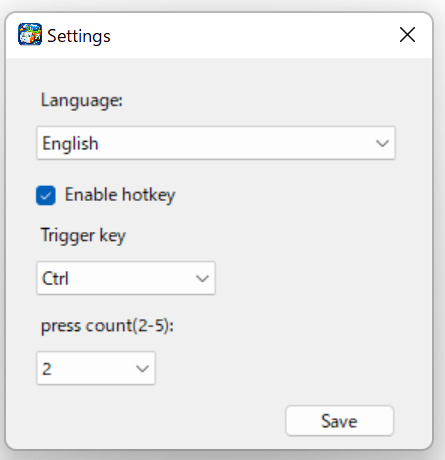
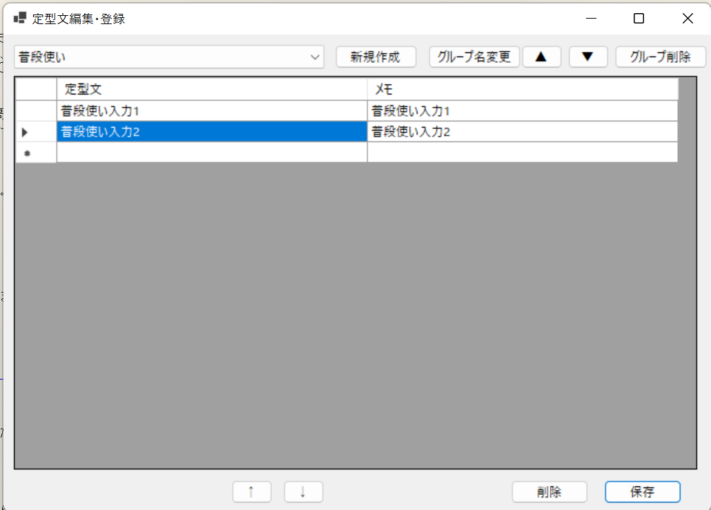
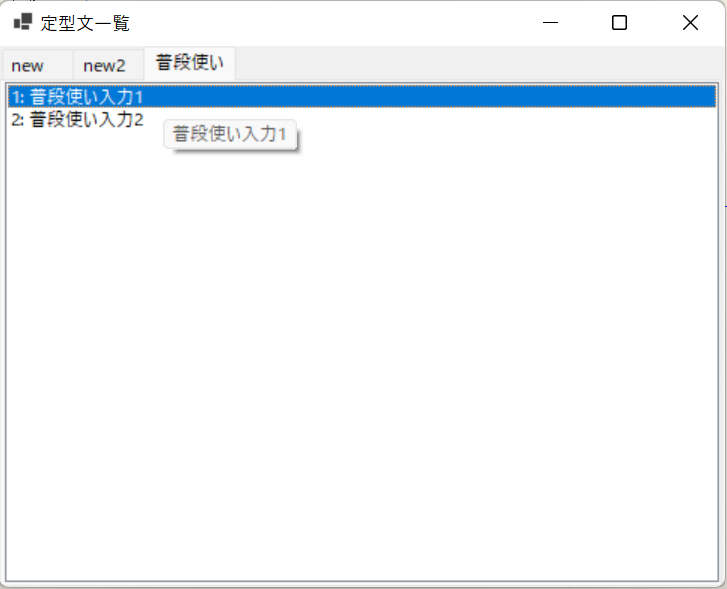

使い方 / Documentation
PhraseLauncher は、定型文をキーボードだけで高速入力できるシンプルなランチャーです。
クイックスタート
2. 起動
exe を実行すると、タスクトレイに常駐します。
3. 言語設定
必要に応じて、言語の切り替え（日本語と英語）と文字サイズの変更、ホットキー関連の変更を行ってください。

4. 定型文を登録
タスクトレイのアイコンを右クリックし、設定画面を開きます。 グループや定型文を登録してください。 ※改行する場合は、Shift + Enterで改行できます。

5. ランチャーを起動
Ctrl を2回連続(キーの種類と回数は設定で変更できます) または Ctrl + Shift + O でランチャーを表示できます。

操作方法
- 0–9 / A–Z のキーで即入力
- キーワード入力で検索
- escキーで即終了
使用中のアプリに合わせてタブを開く
グループ（タブ）ごとに対象アプリを登録しておくと、そのアプリを使用中にランチャーを開いたとき、該当するタブが最初に表示されます。 1つのグループに複数のアプリを登録できます。
- 編集登録画面の
対象アプリ設定ボタンから登録します。 - アプリ名（例:
notepad、EXCEL.EXE）を入力するか、参照...から exe ファイルを選んで追加します。 - どのグループにも登録されていないアプリの場合は、前回ランチャーを閉じたときのタブが表示されます。
- 同じアプリを複数のグループに登録した場合は、グループの並び順で先にあるタブが開きます。
- アプリの判定は実行ファイル名で行うため、同じブラウザ内のサイトごとに分けることはできません。
- ホットキーで開いたときに有効です。タスクトレイのメニューから開いた場合は前回のタブが表示されます。
主な機能
- 定型文の高速入力
- グループ分け・並び替え
- 使用中のアプリに合わせたタブの自動表示
- Shift + Enter による改行入力
- 軽量・高速動作
アプリ更新方法
- 1. アプリを終了
- 2. 新しいバージョンをダウンロード
- 3. 既存フォルダに上書き
- 4. 起動